CODING AGENTS AS PIXEL WORLD MODELS
traex/DeepSeek-V4.1-Flash · 0071
点击播放 · 原生 RGB 像素
逐轮保存的候选
回放视频、检查图与代码变化。
每份候选均可单独播放。实际图片检查记录在下方工具轨迹中。
候选 01播放与检查图
点击播放 · 原生 RGB 像素
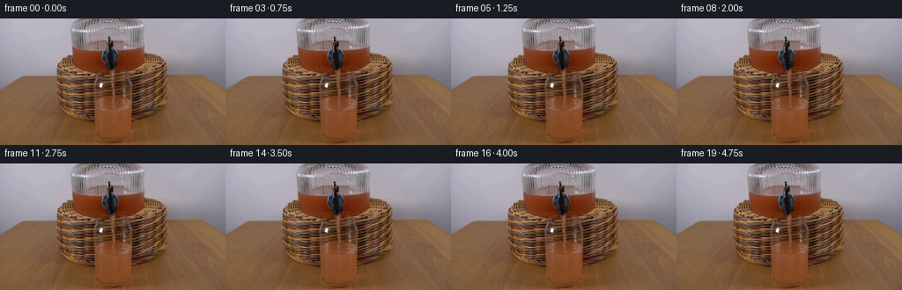
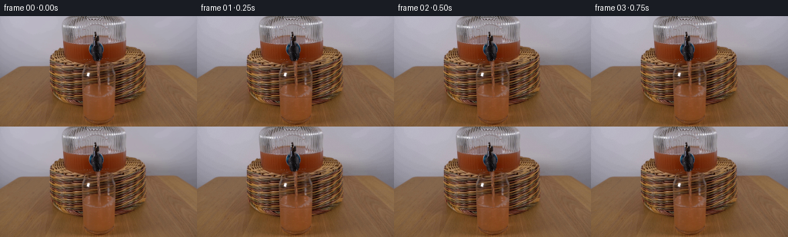
展开代码变化
--- 上一保存版本
+++ 本次保存版本
@@ -0,0 +1,194 @@
+from pathlib import Path
+
+import numpy as np
+from PIL import Image, ImageFilter
+
+import artifact_io
+
+
+CASE_DIR = Path(__file__).resolve().parent
+WIDTH, HEIGHT = 256, 144
+N_FRAMES = 20
+FPS = 4
+
+
+def smoothstep(edge0, edge1, value):
+ t = np.clip((value - edge0) / (edge1 - edge0), 0.0, 1.0)
+ return t * t * (3.0 - 2.0 * t)
+
+
+def blend(base, color, alpha):
+ alpha = np.asarray(alpha, dtype=np.float32)[..., None]
+ return base * (1.0 - alpha) + np.asarray(color, dtype=np.float32) * alpha
+
+
+def glass_surface(x, center_y, time):
+ # The front edge of the elliptical liquid surface sits slightly low.
+ u = np.clip((x - 131.0) / 25.0, -1.0, 1.0)
+ ellipse = 1.05 * (1.0 - u * u)
+ impact = 0.23 * np.sin((x - 129.0) * 0.76 - time * 7.2)
+ impact *= np.exp(-((x - 129.0) / 9.5) ** 2)
+ return center_y + ellipse + impact
+
+
+def add_liquid_rise(frame, source, fill, time):
+ if fill <= 0.02:
+ return frame
+
+ yy, xx = np.mgrid[0:HEIGHT, 0:WIDTH]
+ center_y = 105.0 - fill
+ surface = glass_surface(xx, center_y, time)
+ old_surface = glass_surface(xx, 105.0, 0.0)
+
+ left = 107.3 + 0.055 * (yy - 100.0)
+ right = 155.0 + 0.060 * (yy - 100.0)
+ side_alpha = smoothstep(left, left + 1.4, xx) * (
+ 1.0 - smoothstep(right - 1.6, right, xx)
+ )
+ band_alpha = smoothstep(surface - 0.5, surface + 0.9, yy)
+ band_alpha *= 1.0 - smoothstep(old_surface - 0.1, old_surface + 1.1, yy)
+ band_alpha *= side_alpha
+
+ # Reuse the liquid's own fine texture, shifted up from just below the
+ # original surface. This keeps the refracted stripes and grain continuous.
+ sample_y = np.clip(yy + 6, 0, HEIGHT - 1)
+ sampled = source[sample_y, xx].astype(np.float32)
+ vertical_light = 4.0 * (yy - surface) / max(fill, 1.0)
+ liquid = sampled + vertical_light[..., None]
+
+ frame = frame * (1.0 - band_alpha[..., None]) + liquid * band_alpha[..., None]
+
+ # A fine, darker front meniscus makes the rising surface readable.
+ meniscus = np.exp(-((yy - surface) / 0.48) ** 2) * side_alpha
+ frame = blend(frame, (87.0, 43.0, 22.0), meniscus * 0.23)
+ glint = np.exp(-((yy - (surface + 1.25)) / 0.55) ** 2) * side_alpha
+ frame = blend(frame, (171.0, 104.0, 65.0), glint * 0.13)
+ return frame
+
+
+def add_stream(frame, surface, time):
+ yy, xx = np.mgrid[55:108, 121:138]
+ center = (
+ 128.9
+ + 0.16 * np.sin((yy - 55.0) * 0.51 - time * 7.4)
+ + 0.10 * np.sin((yy - 55.0) * 1.21 + time * 3.8)
+ )
+ width = 1.72 + 0.15 * np.sin((yy - 55.0) * 0.37 + time * 5.6)
+ lateral = np.abs(xx - center)
+ stream_mask = 1.0 - smoothstep(width - 0.65, width + 0.55, lateral)
+
+ bottom = np.minimum(surface[121:138] + 1.1, 106.5)
+ stream_mask *= smoothstep(56.0, 59.0, yy)
+ stream_mask *= 1.0 - smoothstep(bottom - 0.7, bottom + 0.5, yy)
+
+ texture = 0.5 + 0.5 * np.sin(
+ (yy - 55.0) * 1.12 - time * 15.2 + np.sin(xx * 0.9)
+ )
+ edge = smoothstep(0.45 * width, width, lateral)
+ stream_color = np.empty((*yy.shape, 3), dtype=np.float32)
+ stream_color[:] = (148.0, 73.0, 31.0)
+ stream_color = stream_color * (1.0 - 0.42 * edge[..., None])
+ stream_color += (texture[..., None] - 0.5) * np.array([16.0, 9.0, 4.0])
+
+ region = frame[55:108, 121:138]
+ alpha = stream_mask * (0.33 + 0.20 * texture) * (0.70 + 0.30 * edge)
+ region[:] = region * (1.0 - alpha[..., None]) + stream_color * alpha[..., None]
+
+ # A few short-lived highlights travel with the falling liquid.
+ for phase in (0.06, 0.41, 0.73):
+ p = (time * 0.56 + phase) % 1.0
+ by = int(round(59.0 + p * max(1.0, bottom.mean() - 61.0)))
+ bx = int(round(128.8 + 0.16 * np.sin(by * 0.51 - time * 7.4)))
+ if 60 <= by < bottom.mean() - 1:
+ glow = np.exp(
+ -((yy - by) / 0.75) ** 2 - ((xx - bx) / 0.72) ** 2
+ )
+ region[:] = blend(region, (202.0, 132.0, 80.0), glow * 0.20)
+ return frame
+
+
+def add_mixing_and_bubbles(frame, surface_y, time):
+ yy, xx = np.mgrid[96:143, 106:157]
+ below = smoothstep(surface_y[96:143, 106:157] + 0.4, surface_y[96:143, 106:157] + 2.2, yy)
+ inside = smoothstep(108.0, 111.0, xx) * (1.0 - smoothstep(151.0, 155.0, xx))
+ depth = yy - surface_y[96:143, 106:157]
+
+ plume = np.exp(-((xx - 129.2) / 6.5) ** 2) * np.exp(-np.maximum(depth, 0.0) / 8.5)
+ plume *= (0.62 + 0.38 * np.sin(depth * 0.82 - time * 7.0)) * below * inside
+ frame[96:143, 106:157] = blend(
+ frame[96:143, 106:157], (165.0, 96.0, 58.0), plume * 0.095
+ )
+
+ swirl = np.sin((xx - 129.0) * 0.65 + depth * 0.72 - time * 4.3)
+ swirl *= np.exp(-((xx - 129.0) / 12.0) ** 2) * np.exp(-np.maximum(depth, 0.0) / 12.0)
+ swirl *= below * inside
+ frame[96:143, 106:157] = blend(
+ frame[96:143, 106:157], (108.0, 54.0, 27.0), np.maximum(swirl, 0.0) * 0.055
+ )
+
+ # Sparse bubbles rise from the lower liquid and disappear at the surface.
+ for x0, y0, speed, radius in (
+ (119.0, 139.0, 13.0, 1.35),
+ (138.0, 132.0, 10.0, 1.0),
+ (124.5, 128.0, 15.0, 0.8),
+ (144.0, 140.0, 8.0, 0.75),
+ ):
+ y = y0 - (time * speed + (y0 % 7.0))
+ y = surface_y[int(np.clip(y0, 0, HEIGHT - 1)), int(x0)] + 2.0 + (
+ (y - surface_y[int(np.clip(y0, 0, HEIGHT - 1)), int(x0)] - 2.0) % 37.0
+ )
+ if y >= surface_y[int(np.clip(y, 0, HEIGHT - 1)), int(x0)] + 1.4 and y < 140:
+ ring = np.exp(-((yy - y) ** 2 + (xx - x0) ** 2) / (radius * radius))
+ ring -= 0.75 * np.exp(
+ -((yy - y) ** 2 + (xx - x0) ** 2) / ((radius * 0.48) ** 2)
+ )
+ frame[96:143, 106:157] = blend(
+ frame[96:143, 106:157], (205.0, 137.0, 87.0), np.maximum(ring, 0.0) * 0.17
+ )
+ return frame
+
+
+def soften_noise(frame, amount=0.8):
+ noise = np.random.default_rng(71).normal(0.0, amount, frame.shape[:2])
+ noise = np.asarray(
+ Image.fromarray(np.uint8(np.clip(noise + 128.0, 0, 255))).filter(
+ ImageFilter.GaussianBlur(0.55)
+ ),
+ dtype=np.float32,
+ ) - 128.0
+ return frame + noise[..., None]
+
+
+def generate_frames():
+ source = np.asarray(Image.open(CASE_DIR / "first_frame.png").convert("RGB"), dtype=np.uint8)
+ assert source.shape == (HEIGHT, WIDTH, 3)
+ frames = []
+
+ for index in range(N_FRAMES):
+ if index == 0:
+ frames.append(source.copy())
+ continue
+
+ time = index / FPS
+ progress = index / (N_FRAMES - 1)
+ fill = 4.3 * progress**0.86
+ center_y = 105.0 - fill
+
+ frame = source.astype(np.float32)
+ frame = add_liquid_rise(frame, source, fill, time)
+
+ xs = np.arange(WIDTH, dtype=np.float32)
+ surface = glass_surface(xs, center_y, time)
+ surface_y = np.broadcast_to(surface[None, :], (HEIGHT, WIDTH))
+ frame = add_mixing_and_bubbles(frame, surface_y, time)
+ frame = add_stream(frame, surface, time)
+ frame = soften_noise(frame, 0.45)
+ frames.append(np.uint8(np.clip(frame, 0, 255)))
+
+ return np.stack(frames)
+
+
+if __name__ == "__main__":
+ frames = generate_frames()
+ artifact_io.save(frames, CASE_DIR)
+ print(f"saved {len(frames)} frames to {CASE_DIR}")
可观测工具轨迹
实际执行的命令与返回图片。
命令 1exit 0
/bin/bash -c "pwd && rg --files -g 'prompt.txt' -g 'GENERATION_RULES.md' -g '"'!node_modules'"' -g '"'!venv'"'"
命令 2exit 0
/bin/bash -c 'ls -la'
命令 3exit 0
/bin/bash -c 'cat prompt.txt'
命令 4exit 0
/bin/bash -c 'cat GENERATION_RULES.md'
命令 5exit 0
/bin/bash -c "sed -n '1,260p' artifact_io.py"
命令 6exit 0
/bin/bash -c "sed -n '1,260p' player_template.html"
命令 7exit 0
/bin/bash -c "find .tmp -maxdepth 2 -type f -printf '%p %s bytes\\n' | head -100"
命令 8exit 127
/bin/bash -c 'file first_frame.png && identify first_frame.png'
命令 9exit 0
/bin/bash -c "python - <<'PY'
from PIL import Image
import numpy as np
im=np.array(Image.open('first_frame.png').convert('RGB'))
print(im.shape, im.dtype)
# dominant colors and region stats
for name,(x0,y0,x1,y1) in {'glass':(88,73,161,144),'stream':(124,60,138,112),'spout':(112,41,148,74),'jug':(60,1,201,74),'bg':(0,0,256,20)}.items():
a=im[y0:y1,x0:x1]
print(name, 'mean', a.mean((0,1)).round(1), 'minmax', a.min(),a.max())
PY"命令 10exit 0
/bin/bash -c "python - <<'PY' mods=['cv2','numpy','scipy','PIL','skimage'] for m in mods: try: x=__import__(m); print(m, getattr(x,'__version__','ok')) except Exception as e: print(m, 'ERR', e) PY"
命令 11exit 0
/bin/bash -c "python - <<'PY'
from PIL import Image
im=Image.open('first_frame.png')
im.crop((60,30,200,144)).resize((560,456),Image.Resampling.NEAREST).save('.tmp/crop.png')
PY"命令 12exit 0
/bin/bash -c "python - <<'PY'
from PIL import Image
import numpy as np
im=np.array(Image.open('first_frame.png').convert('RGB'))
# print RGB values at sample coords
for y in [55,60,70,80,90,100,105,108,110,115,120,130,140]:
print('y',y,[(x,tuple(im[y,x])) for x in [90,100,110,120,128,136,145,155,160]])
PY"命令 13exit 0
/bin/bash -c "python - <<'PY'
from PIL import Image, ImageDraw, ImageFont
im=Image.open('first_frame.png').convert('RGB').resize((1024,576),Image.Resampling.NEAREST)
d=ImageDraw.Draw(im)
for x in range(0,257,10):
xx=x*4; d.line((xx,0,xx,576),fill=(0,255,0),width=1)
d.text((xx+2,2),str(x),fill=(0,255,0))
for y in range(0,145,10):
yy=y*4; d.line((0,yy,1024,yy),fill=(0,255,255),width=1)
d.text((2,yy+2),str(y),fill=(0,255,255))
im.save('.tmp/grid.png')
PY"命令 14exit 0
/bin/bash -c "python - <<'PY'
from PIL import Image
import numpy as np
im=np.array(Image.open('first_frame.png').convert('RGB')).astype(float)
for x in range(100,157,4):
a=im[90:120,x]
# juice-ish: red above green, saturation
s=a.max(1)-a.min(1)
idx=np.where((a[:,0]>70)&(a[:,0]>a[:,1]*1.35)&(a[:,1]>a[:,2]*1.2))[0]
print(x, (idx.min()+90 if len(idx) else None), [(y+90,tuple(a[y].astype(int))) for y in range(15,22)])
PY"命令 15exit 0
/bin/bash -c "python - <<'PY'
from PIL import Image
import numpy as np
im=np.array(Image.open('first_frame.png').convert('RGB'))
# Find glass outline via high brightness/saturation regions on lower half
for y in [82,84,86,88,90,92,94,96,98,100,102,104,106,108,110,112,120,130,140]:
a=im[y]
# print contiguous bright-ish segments x 80..180
mask=(a[:,0]+a[:,1]+a[:,2]>250)
idx=np.where(mask[75:180])[0]+75
seg=[]
if len(idx):
st=pr=idx[0]
for x in idx[1:]:
if x>pr+1: seg.append((st,pr)); st=x
pr=x
seg.append((st,pr))
print(y,seg)
PY"命令 16exit 0
/bin/bash -c "python - <<'PY'
from PIL import Image
import numpy as np
im=np.array(Image.open('first_frame.png').convert('RGB'))
# grid values around glass outline using edge-ish gradient
lum=im.mean(2)
for y in range(80,145,3):
vals=[]
for x in range(80,175,3):
r,g,b=map(int,im[y,x]);
# classify: bright rim (sum>320), juice brown (r>g*1.45 and g>b*1.25 and r>85)
c='J' if r>g*1.45 and g>b*1.2 and r>80 else ('B' if r+g+b>330 else '.')
vals.append(c)
print(f'{y:3}', ''.join(vals))
print('x', ''.join(str((x//10)%10) for x in range(80,175,3)))
PY"命令 17exit 0
/bin/bash -c "python - <<'PY'
from PIL import Image
import numpy as np
im=np.array(Image.open('first_frame.png').convert('RGB'))
for y in [90,95,100,105,110,112,115,120,125,130,135,140,143]:
# print boundary by strongest adjacent color jump in lower center excluding stream x<150
x0,x1=85,175
g=np.linalg.norm(np.diff(im[y].astype(float),axis=0),axis=1)
ix=np.argsort(g[x0:x1])[-8:]+x0
print(y, sorted(ix.tolist()), 'vals',[(int(x),tuple(im[y,x])) for x in sorted(ix.tolist())[:3]])
PY"命令 18exit 0
/bin/bash -c "python - <<'PY'
from PIL import Image
im=Image.open('first_frame.png')
# split source into close crops for visual review
for name,box,scale in [('lower',(70,70,185,144),5),('upper',(70,0,205,90),4),('spout',(105,35,155,95),8)]:
im.crop(box).resize(((box[2]-box[0])*scale,(box[3]-box[1])*scale),Image.Resampling.NEAREST).save('.tmp/'+name+'.png')
PY"命令 19exit 0
/bin/bash -c "python - <<'PY'
from PIL import Image
im=Image.open('first_frame.png')
im.crop((90,75,170,144)).resize((640,552),Image.Resampling.NEAREST).save('.tmp/glass.png')
PY"命令 20exit 0
/bin/bash -c "python - <<'PY'
from PIL import Image
import numpy as np
im=np.array(Image.open('first_frame.png').convert('RGB'))
# scan where edge is by using expected glass ellipse: print row pixels x 95..162
for y in [100,101,102,103,104,105,106,107,108,109,110,111,112,113,114,115,116,117,118,119,120]:
print(y, ' '.join(f'{x}:{im[y,x,0]},{im[y,x,1]},{im[y,x,2]}' for x in [99,100,101,102,103,104,105,106,107,108,109,110]))
PY"命令 21exit 1
/bin/bash -c "python - <<'PY'
from PIL import Image
import numpy as np
im=np.array(Image.open('first_frame.png').convert('RGB')).astype(float)
# top and bottom of glass detect by comparing interior color distribution x=109..149
for y in range(80,145):
a=im[y,108:150]
# fraction pixels near juice color (r>90, r/g>1.45, g/b>1.4)
mask=(a[:,0]>90)&(a[:,0]>1.45*a[:,1])&(a[:,1]>1.35*a[:,2])
print(y, mask.mean().round(2), np.median(a,axis=0).astype(int).tolist())
PY"命令 22exit 0
/bin/bash -c "python - <<'PY'
from PIL import Image
import numpy as np
im=np.array(Image.open('first_frame.png').convert('RGB')).astype(float)
# print alpha-ish visibility: compare each pixel to basket background x=70-100 same y, show interior vs edge rows
for y in [84,86,88,90,92,94,96,98,100,102,104,106,108,110,112,114,116,118,120,122,124,126,128,130,132,134,136,138,140,142,143]:
a=im[y]
# find strong transition along x 95..165 in R
d=np.abs(np.diff(a[:,0]))
ix=np.argsort(d[95:165])[-5:]+95
print(y, sorted(ix.tolist()), [(int(x), int(a[x,0]),int(a[x,1]),int(a[x,2])) for x in sorted(ix.tolist())])
PY"命令 23exit 0
/bin/bash -c "python - <<'PY'
from PIL import Image
im=Image.open('first_frame.png')
im.crop((110,88,152,110)).resize((840,440),Image.Resampling.NEAREST).save('.tmp/surface.png')
PY"命令 24exit 0
/bin/bash -c "python - <<'PY'
from PIL import Image
im=Image.open('first_frame.png')
im.crop((80,60,185,144)).resize((840,672),Image.Resampling.NEAREST).save('.tmp/bottom.png')
PY"命令 25exit 0
/bin/bash -c "python - <<'PY'
from PIL import Image
import numpy as np
im=np.array(Image.open('first_frame.png').convert('RGB')).astype(int)
# print stream classification, x 118..142 y 55..100
for y in range(55,101):
s=''
for x in range(118,143):
r,g,b=im[y,x]
if r<45 and g<45 and b<45: c='K'
elif r>g*1.35 and g>b*1.3 and r>70: c='J'
elif r+g+b>300: c='W'
elif r>g*1.2 and g>b*1.2: c='j'
else: c='.'
s+=c
print(f'{y:3} {s}')
print(' '+''.join(str(x//10%10) for x in range(118,143)))
print(' '+''.join(str(x%10) for x in range(118,143)))
PY"命令 26exit 0
/bin/bash -c "python - <<'PY'
from PIL import Image
im=Image.open('first_frame.png')
im.crop((100,38,170,90)).resize((980,728),Image.Resampling.NEAREST).save('.tmp/tap.png')
PY"命令 27exit 0
/bin/bash -c "python - <<'PY'
from PIL import Image
im=Image.open('first_frame.png')
im.crop((60,0,205,80)).resize((870,480),Image.Resampling.NEAREST).save('.tmp/dispenser.png')
PY"命令 28exit 0
/bin/bash -c "python - <<'PY'
from PIL import Image, ImageDraw, ImageFont
box=(95,72,162,144); s=10
im=Image.open('first_frame.png').convert('RGB').crop(box).resize(((box[2]-box[0])*s,(box[3]-box[1])*s),Image.Resampling.NEAREST)
d=ImageDraw.Draw(im)
for x in range(box[0],box[2]+1,5):
xx=(x-box[0])*s; d.line((xx,0,xx,im.height),fill=(0,255,0),width=1); d.text((xx+2,2),str(x),fill=(0,255,0))
for y in range(box[1],box[3]+1,5):
yy=(y-box[1])*s; d.line((0,yy,im.width,yy),fill=(0,255,255),width=1); d.text((2,yy+2),str(y),fill=(0,255,255))
im.save('.tmp/glass_grid.png')
PY"命令 29exit 0
/bin/bash -c "python - <<'PY'
from PIL import Image
import numpy as np
im=np.array(Image.open('first_frame.png').convert('RGB')).astype(int)
for y in range(50,96,2):
vals=[]
for x in range(120,146):
r,g,b=im[y,x]
# stream is stronger red relative to surrounding basket? use r-g and brightness
vals.append(r-g)
# local max center
print(y, 'max',max(vals),'at',120+vals.index(max(vals)), 'center',im[y,128:142].mean(0).astype(int).tolist())
PY"命令 30exit 0
/bin/bash -c "python - <<'PY'
from PIL import Image
im=Image.open('first_frame.png')
# targeted small crops in original and nearest scaled
for name,box in [('rim',(96,80,164,108)),('outline',(100,102,162,144)),('basketglass',(88,100,170,144))]:
im.crop(box).resize(((box[2]-box[0])*10,(box[3]-box[1])*10),Image.Resampling.NEAREST).save('.tmp/'+name+'2.png')
PY"命令 31exit 0
/bin/bash -c "python - <<'PY'
from PIL import Image
im=Image.open('first_frame.png')
box=(80,0,200,144)
im.crop(box).resize((720,864),Image.Resampling.NEAREST).save('.tmp/scene_nearest.png')
PY"命令 32exit 0
/bin/bash -c "python - <<'PY'
from PIL import Image
im=Image.open('first_frame.png')
box=(95,78,168,144)
im.crop(box).resize(((box[2]-box[0])*8,(box[3]-box[1])*8),Image.Resampling.BICUBIC).save('.tmp/glass_smooth.png')
PY"命令 33exit 0
/bin/bash -c "python - <<'PY'
from PIL import Image
import numpy as np
im=np.array(Image.open('first_frame.png').convert('RGB')).astype(int)
# colors at x=95..165 y=106..120, show R/G ratio as chars maybe boundary
for y in range(104,122):
print('y',y)
for x in range(96,166,1):
r,g,b=im[y,x]
if r>110 and r>1.45*g and g>1.35*b: c='J'
elif r+g+b>350: c='W'
elif r+g+b<120: c='K'
else: c='.'
print(c,end='')
print()
print('x',''.join(str(x//10%10) for x in range(96,166)))
print('x',''.join(str(x%10) for x in range(96,166)))
PY"命令 34exit 0
/bin/bash -c "python - <<'PY'
from PIL import Image
import numpy as np
im=np.array(Image.open('first_frame.png').convert('RGB')).astype(int)
for y in [90,92,94,96,98,100,102,104,106,108,110,112,114,116,118,120,122,124,126,128,130,132,134,136,138,140,142,143]:
# print medians across x=109:149 and left/right backgrounds
print(y, 'interior', np.median(im[y,110:148],axis=0).astype(int).tolist(), 'left',im[y,98:106].mean(0).astype(int).tolist(), 'right',im[y,153:161].mean(0).astype(int).tolist())
PY"命令 35exit 0
/bin/bash -c "python - <<'PY'
from PIL import Image
im=Image.open('first_frame.png')
# reconstruct exact glass crop only
im.crop((88,78,170,144)).resize((820,660),Image.Resampling.LANCZOS).save('.tmp/glass_zoom.png')
PY"命令 36exit 0
/bin/bash -c "python - <<'PY'
from PIL import Image
im=Image.open('first_frame.png')
im.crop((88,78,170,144)).resize((328,264),Image.Resampling.NEAREST).save('.tmp/glass4.png')
PY"命令 37exit 1
/bin/bash -c 'python generate.py'
命令 38exit 0
/bin/bash -c 'python generate.py'
命令 39exit 0
/bin/bash -c "python - <<'PY'
from PIL import Image
for i in [0,5,10,15,19]:
im=Image.open(f'frames/{i:02d}.png')
im.crop((90,72,170,144)).resize((640,576),Image.Resampling.NEAREST).save(f'.tmp/f{i}_glass.png')
PY"命令 40exit 0
/bin/bash -c "python - <<'PY'
from PIL import Image, ImageChops
import numpy as np
src=np.array(Image.open('first_frame.png').convert('RGB'))
f0=np.array(Image.open('frames/00.png').convert('RGB'))
print('frame0 exact:', np.array_equal(src,f0), 'maxdiff', np.abs(src.astype(int)-f0.astype(int)).max())
for i in [1,5,10,15,19]:
a=np.array(Image.open(f'frames/{i:02d}.png').convert('RGB')).astype(int)
d=np.abs(a-src.astype(int))
print(i, 'mean',d.mean().round(3),'changed',np.count_nonzero(d),'max',d.max())
PY"命令 41exit 0
/bin/bash -c "python - <<'PY'
from PIL import Image
ims=[Image.open(f'frames/{i:02d}.png').crop((90,72,170,144)) for i in [0,5,10,15,19]]
out=Image.new('RGB',(80*5,72),(25,28,35))
for j,im in enumerate(ims): out.paste(im,(80*j,0))
out.resize((1600,288),Image.Resampling.NEAREST).save('.tmp/progression.png')
PY"命令 42exit 1
/bin/bash -c "python - <<'PY'
from pathlib import Path
import json
import numpy as np
from PIL import Image
root=Path('.')
frames=sorted((root/'frames').glob('*.png'))
assert len(frames)==20, len(frames)
arr=np.stack([np.asarray(Image.open(p).convert('RGB')) for p in frames])
assert arr.shape==(20,144,256,3), arr.shape
first=np.asarray(Image.open('first_frame.png').convert('RGB'))
assert np.array_equal(arr[0], first)
packed=np.load('pixels.npz')['pixels']
assert packed.shape==(144,256,20), packed.shape
recovered=np.stack([(packed[:,:,i]>>16)&255, (packed[:,:,i]>>8)&255, packed[:,:,i]&255], axis=-1).astype(np.uint8)
assert np.array_equal(recovered, arr)
assert (root/'index.html').stat().st_size>10000
print(json.dumps({'frames':len(frames),'shape':arr.shape,'fps':4,'first_frame_exact':True,'npz_matches_pngs':True,'index_html_bytes':(root/'index.html').stat().st_size}, indent=2))
PY"命令 43exit 1
/bin/bash -c "python - <<'PY'
from pathlib import Path
import json
import numpy as np
from PIL import Image
root=Path('.')
frames=sorted((root/'frames').glob('*.png'))
assert len(frames)==20, len(frames)
arr=np.stack([np.asarray(Image.open(p).convert('RGB')) for p in frames])
assert arr.shape==(20,144,256,3), arr.shape
first=np.asarray(Image.open('first_frame.png').convert('RGB'))
assert np.array_equal(arr[0], first)
packed=np.load('pixels.npz')['pixels']
assert packed.shape==(144,256,20), packed.shape
recovered=np.stack([(packed>>16)&255, (packed>>8)&255, packed&255], axis=-1).astype(np.uint8)
assert np.array_equal(recovered, arr)
assert (root/'index.html').stat().st_size>10000
print(json.dumps({'frames':len(frames),'shape':list(arr.shape),'fps':4,'first_frame_exact':True,'npz_matches_pngs':True,'index_html_bytes':(root/'index.html').stat().st_size}, indent=2))
PY"命令 44exit 0
/bin/bash -c "python - <<'PY'
import numpy as np
from PIL import Image
from pathlib import Path
arr=np.stack([np.asarray(Image.open(p).convert('RGB')) for p in sorted(Path('frames').glob('*.png'))])
p=np.load('pixels.npz')['pixels']
rec=np.stack([(p>>16)&255,(p>>8)&255,p&255],axis=-1).astype(np.uint8)
print(arr.shape,p.shape,rec.shape)
for i in range(20):
d=np.abs(arr[i].astype(int)-rec[:,:,i].astype(int))
print(i,d.max(),np.count_nonzero(d))
PY"命令 45exit 0
/bin/bash -c "python - <<'PY'
import numpy as np
from PIL import Image
from pathlib import Path
arr=np.stack([np.asarray(Image.open(p).convert('RGB')) for p in sorted(Path('frames').glob('*.png'))])
p=np.load('pixels.npz')['pixels']
rec=np.stack([(p>>16)&255,(p>>8)&255,p&255],axis=-1).astype(np.uint8).transpose(2,0,1,3)
print('npz roundtrip exact:',np.array_equal(arr,rec))
print('frame0 exact:',np.array_equal(arr[0],np.asarray(Image.open('first_frame.png').convert('RGB'))))
print('frames,shape,fps,index_bytes:',len(arr),arr.shape,4,Path('index.html').stat().st_size)
PY"命令 46exit 0
/bin/bash -c "git status --short 2>/dev/null || true; ls -lh generate.py pixels.npz index.html inspection.png transition_check.png; find frames -maxdepth 1 -name '*.png' | wc -l"
视觉工具实际返回图片 1
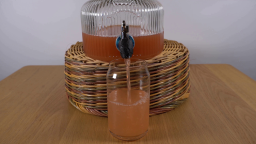
视觉工具实际返回图片 2
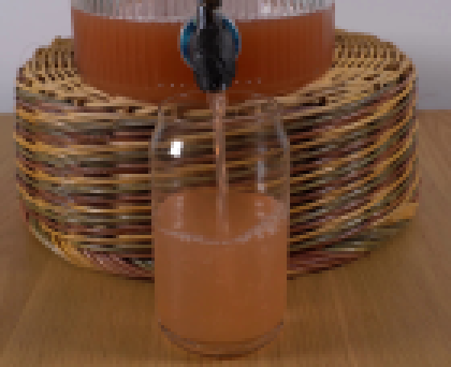
视觉工具实际返回图片 3
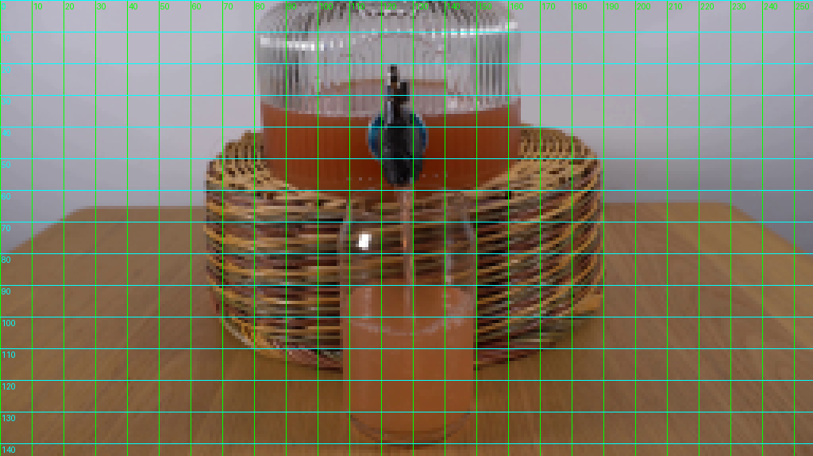
视觉工具实际返回图片 4
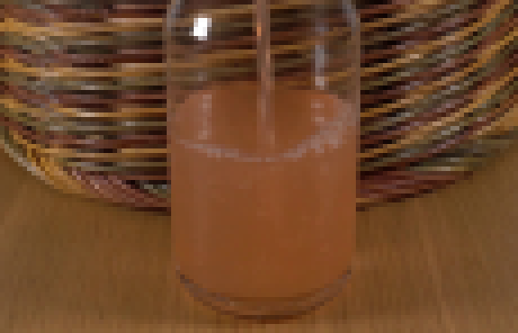
视觉工具实际返回图片 5
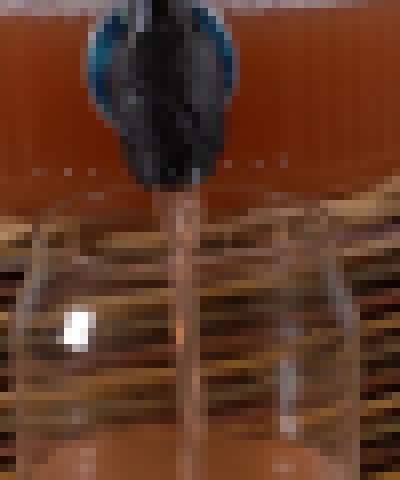
视觉工具实际返回图片 6
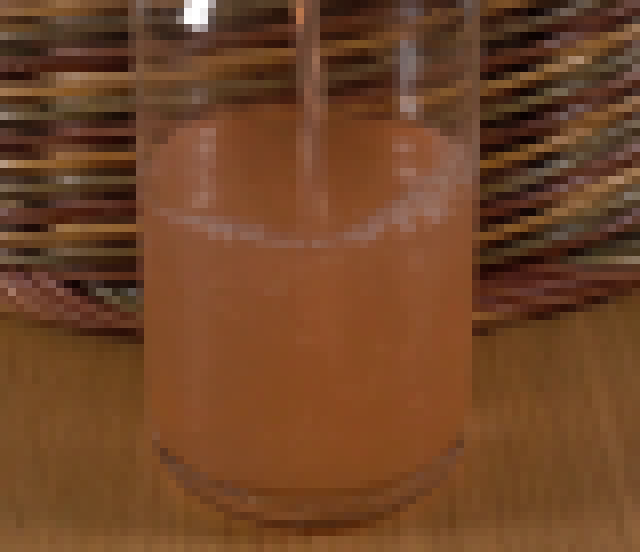
视觉工具实际返回图片 7
视觉工具实际返回图片 8
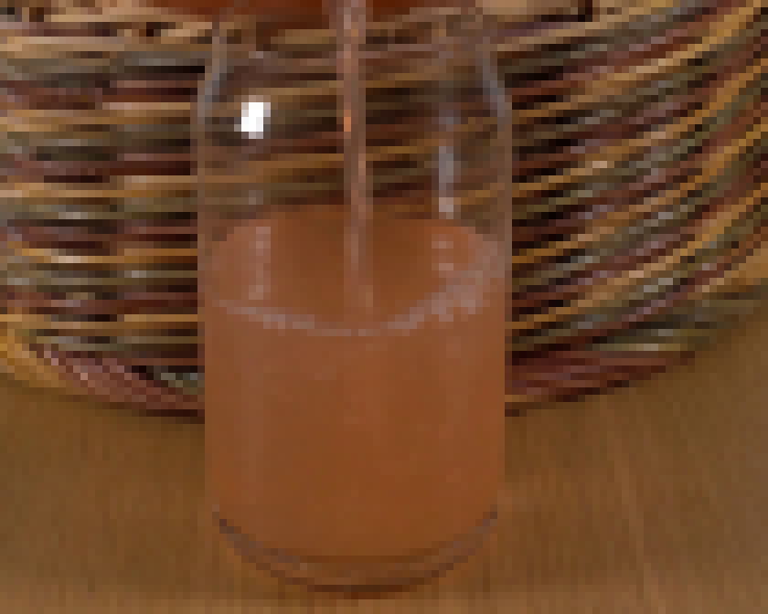
视觉工具实际返回图片 9
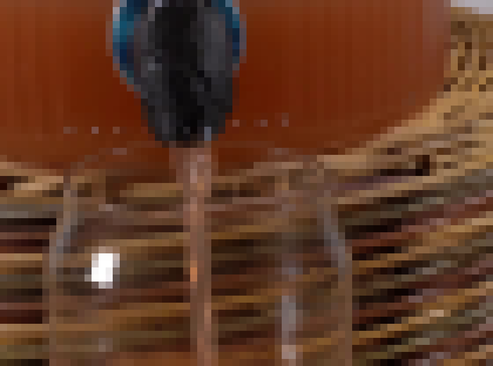
视觉工具实际返回图片 10
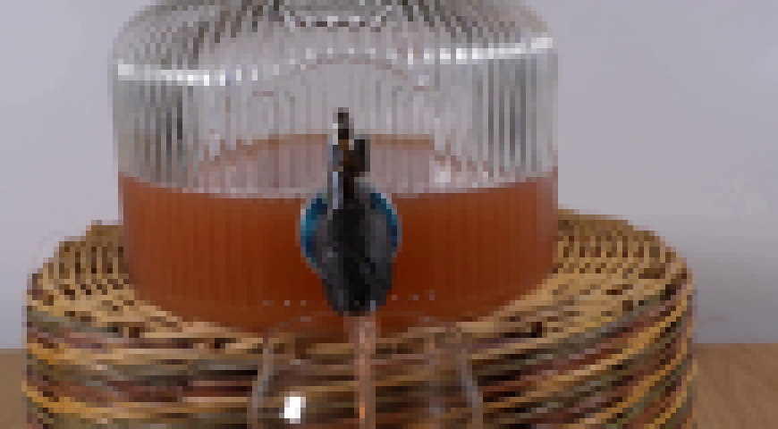
视觉工具实际返回图片 11
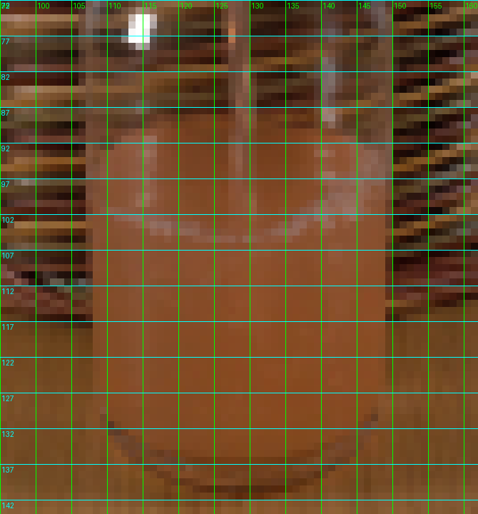
视觉工具实际返回图片 12
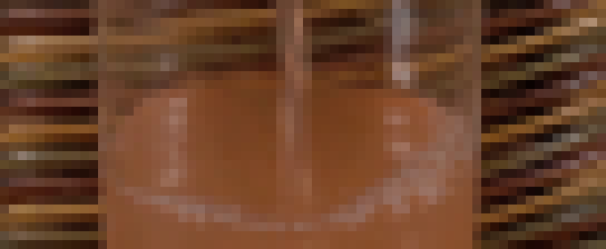
视觉工具实际返回图片 13
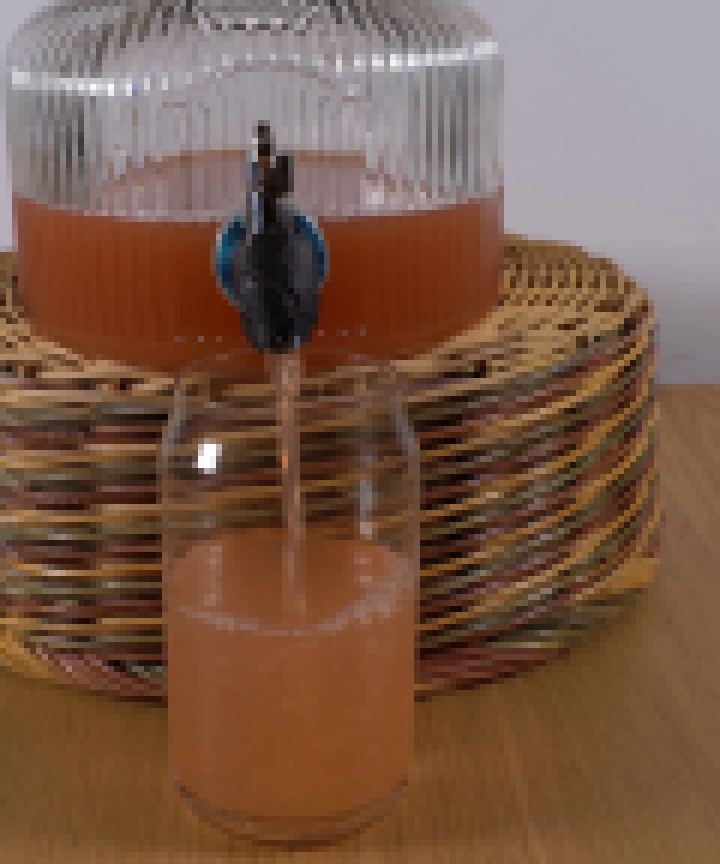
视觉工具实际返回图片 14
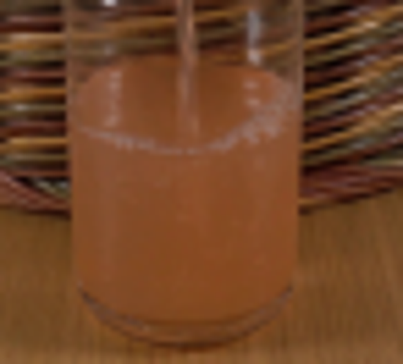
视觉工具实际返回图片 15
视觉工具实际返回图片 16
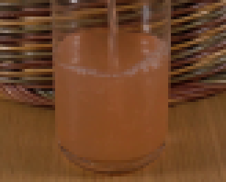
视觉工具实际返回图片 17

视觉工具实际返回图片 18
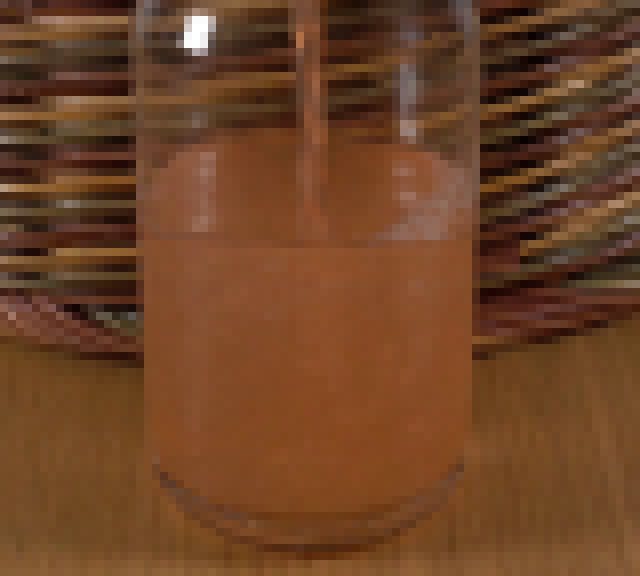
视觉工具实际返回图片 19
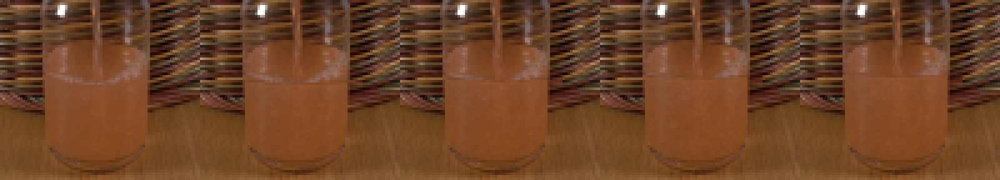
保存候选 1 份；完成命令 46 次；可验证图片返回 19 张。原始 API 响应与完整日志保留在本地。